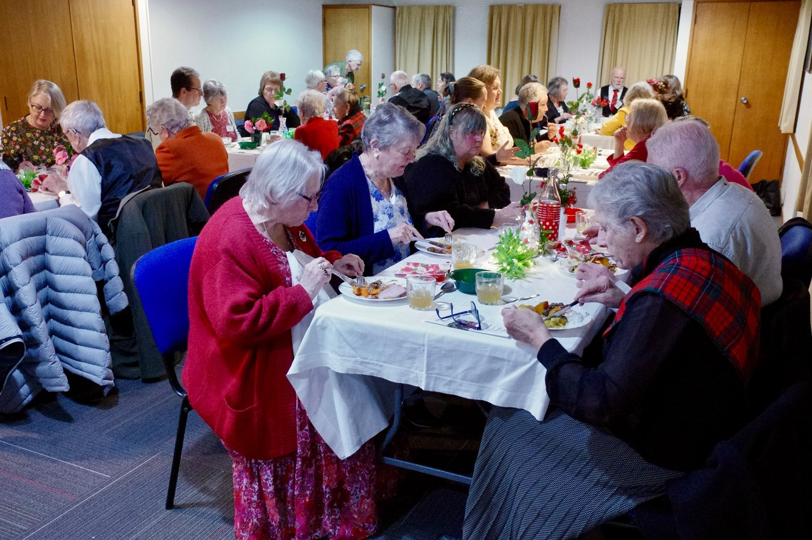
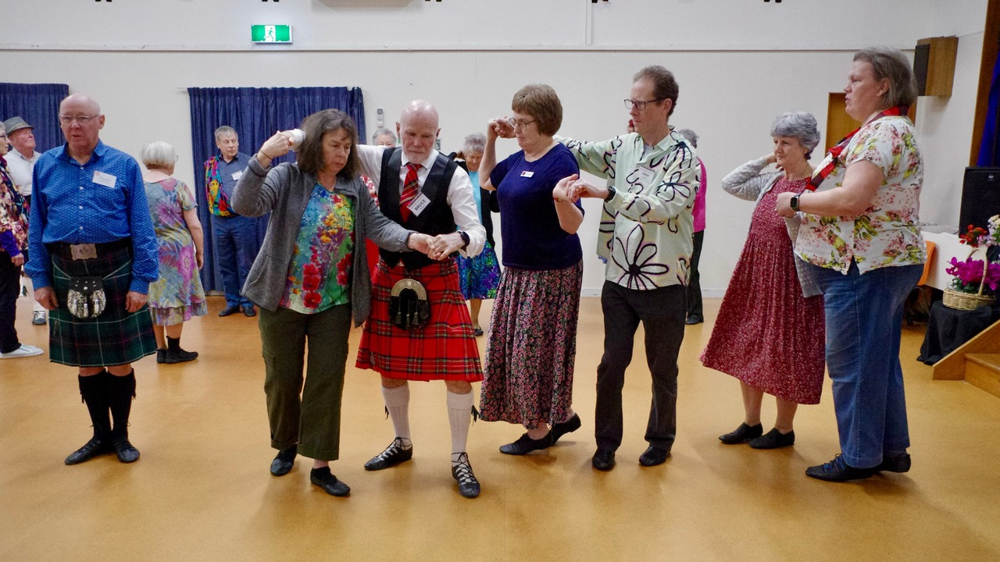

Hello everyone

Not our usual club night last night, because some of us attended Ngaio's Dinner Dance. In fact, a dozen Tawa members attended, including Maureen Robson and Jan Bruce (both Tawa life members), and three who came in at 8pm just for the dancing. What a lovely night we had. The tables were all decorated according to "Flower Power" theme, with lots of (artificial) flowers, floral serviettes, and beautiful printed dance programmes, and neat little lists of flower-themed questions to amuse ourselves with, while chatting before dinner. The dinner was abundant and delicious, finished off with a nice selection of dessert goodies. When dancing started, we had great music from Jason Morris and Heather Elder. Jason looked resplendent with a daisy garland on his head, and sporting daisy-shaped sunglasses.
As she briefed the dances, Ngaio's teacher Melva wove lovely stories around the names of the dances, especially the ones that were not immediately obviously "flower powered", like Mairi's Wedding and Friendships, or Best Set in the Hall, which had its name adjusted to "Best Flower in the Garden". Other dances on the programme were:
The Dancing Bees, Wisp of Thistle, Scotland's Gardens, Flowers of Edinburgh and Joie de Vivre.
John was there too, with his camera at the ready.

Forty people sitting down to a delicious dinner before the start of dancing.

Most of the dancers dresses to the "Flower Power" theme
Introductory Classes
...are starting next week, and will continue for the next three weeks after that. Here's hoping that our advertising will result in a good number of new dancers. Do keep promoting the classes to your friends, neighbours, rellies and colleagues. Better still, bring them along!
Upcoming events
Details in last week's email.
- This Saturday 26 July, 6:00 pm - Upper Hutt Annual Dance
- Sat 2 August, 1:30 pm - Reels Class
- Sat 9 August, 7:00 - Waikanae 50th Celebration Dance
- Sun 17 August, 1:30 pm - Ashhurst Annual Dance
- Sat 23 August, 7:30 pm - Johnsonville & Capital City Combined Annual Dance
- Sat 6 September, 7:30 pm - Lower Hutt Annual Dance
Tuesday afternoon dancing
29 July - Bonus General group, with Catherine (5th Tue in July)
12 August - Experienced group with Elizabeth Ferguson
RSCDS Fees
RSCDS fees are due in August. Current members will be asked to confirm their details and whether they wish to renew their membership. By joining the RSCDS, you are supporting the SCD community through teacher training, dance books and music, and major SCD events. You get a range of benefits, including $100 off your registration fee for this year's RSCDS Summer School in Christchurch.
Hilary is still away (will be back by the week after next) ands she will get in touch with current members when she's recovered from her travels. In the meantime, here are the 2025-26 RSCDS membership fees:
Adult Joint: $92 per person
Adult Joint Email: $84 per person
Adult Single: $117
Adult Single Email: $101
Young Adult (18-24): $83
Young Adult (18-24) Email: $67
Adult Single: $117
Adult Single Email: $101
Young Adult (18-24): $83
Young Adult (18-24) Email: $67
"Email" means you will receive the NZ Branch newsletter (Kiwi News) by email rather than as a physical copy. "Joint" is for a shared membership where two people live at the same address.
Dance Scottish Together
The July issue of this RSCDS newsletter can be accessed here.
Levin Annual Dance
A dozen Tawa members (including Mary, who was up on stage in the band) attended the Levin Annual Dance last Sunday afternoon. As we arrived at the hall, we were welcomed by two pipers playing outside the hall. What a great dance, with a lovely programme of well-known dances, wonderful music, and an amazing afternoon tea! Melva Waite was the MC, and music was provided by the Saltire Scottish Dance Band (Mary, Sharlene and Glenice). Maureen Robson, who has a special relationship with the Levin Club as an occasional guest teacher, was there too. She is now sufficiently recovered from her hip surgery to be able to do quite a few dances (though walking them). I was very pleased to dance a couple of dances with her.
On the photo (by Joy Tracey), there are nine Tawa members, dancing "The Kissing Bridge". See if you can find them all.
That's all for now. See you next week. Have a lovely weekend.
Desiree
Desiree Patterson
tawa@dancesescottish.org.nz
Secretary, Tawa SCD Club